Proyecto Aula 2IV18
indice:
-Conceptos basicos
-¿Que desarrollamos?
-¿Como nos servirá adentro del CECYT 2?
-Proyectos Grupales
-Concluciones generales acerca del tema

¿Que es la sustentabilidad?
La RAE afirma que el término sustentable es algo que se puede sustentar
por sí mismo y por otro lado el término sostenible es un proceso que se mantiene por sí solo.
Un ejemplo para sostenibles es un desarrollo económico que no necesite de ayuda exterior
y que no merme los recursos ya existentes

“El desarrollo sustentable hace referencia a la capacidad que haya
desarrollado el sistema humano para satisfacer las necesidades
de las generaciones actuales sin comprometer los recursos y
oportunidades para el crecimiento y desarrollo de las
generaciones futuras.”
tipos de sustentabilidad
Sustentabilidad Social
Se vincula con los valores y principios de la paz y la equidad para todas las personas.

Sustentabilidad Ecológica o Ambiental
Busca la conservación del medio ambiente y los recursos naturales

Sustentabilidad Económica
Está realacionada con el desarrollo adecuado y ético de las empresas y el sector privado

Sustentabilidad Política
Tiene que ver con la democracia y la gobernabilidad de los países y sus estados.

¿Como desarrollamos el proyecto?
atraves de varios campos de las unidades de aprendizaje utilizamos las herramientas
que nos proporcionaron en el semestre para elaborar un proyecto en torno a la Sustentabilidad
en biologia, por ejemplo realizamos un biorreactor, tanto para la extraccion de etanol como para otras utilidades
en la materia de orientacion realizamos un video donde pudimos fomentar al desarrollo sustentable apoyando la idea
que la sustentabilidad es un habito que tiene que ser impartido en las escuelas desde los inicios de nuestra vida
apoyamos la idea que la sustentabilidad es lo que nos ayudará en un futuro.ya que
es una forma viable para mantener al planeta y la raza humana
¿Como nos servirá adentro del CECYT 2?
fomentar hábitos en los alumnos y docentes para el cuidado del medio ambiente son solo algunas
de las propuestas para conformar una escuela sustentable. No se trata de cambiar la escuela por una nueva,
sino de transformarla poco a poco para obtener un desarrollo donde podamos aummentar la longevidad de
los recursos y areas verdes del plantel, así como el consumo de los servicios que hay en la escuela tales
como luz, agua, gas y el mantenimiento de las instalaciones.pudiendo reducirse en un 40% gastos economicos
y ambientales dentro del cecyt 2
Proyectos realizados
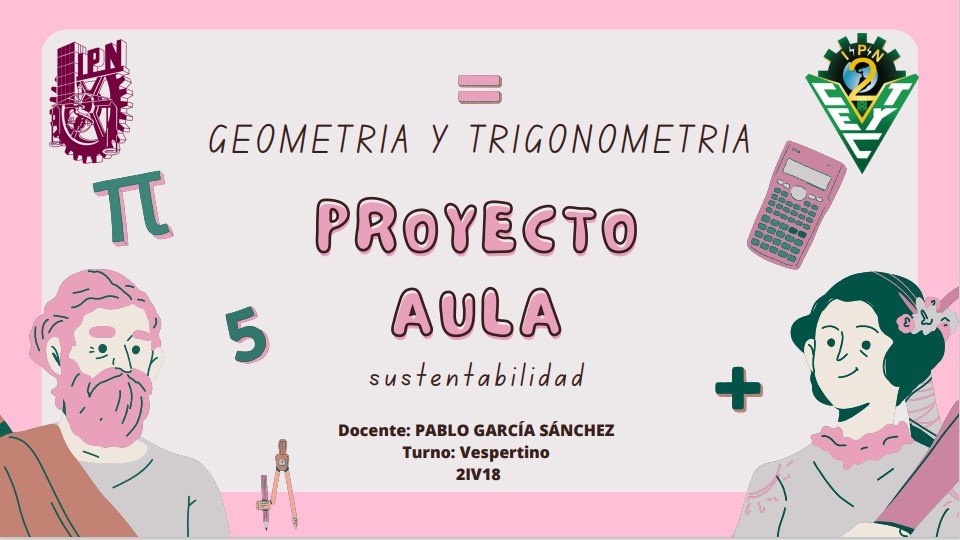
 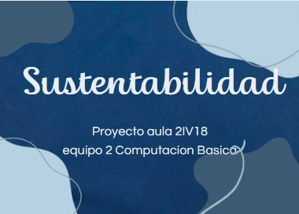
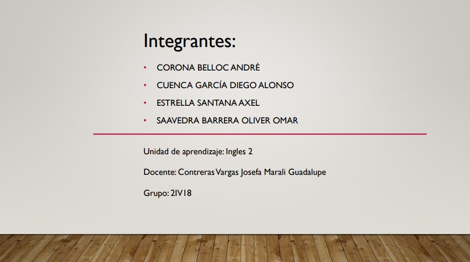
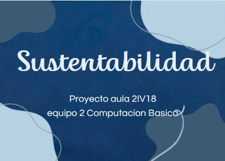
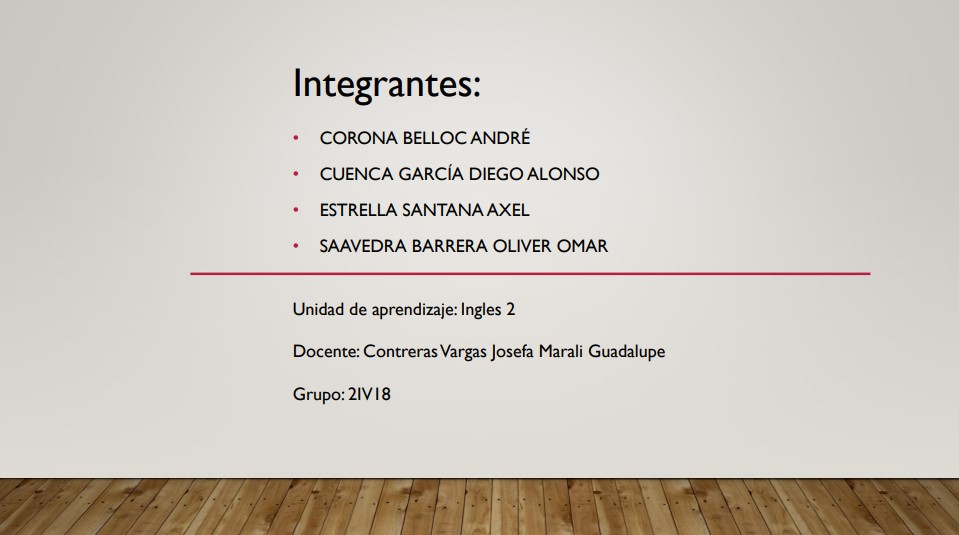
 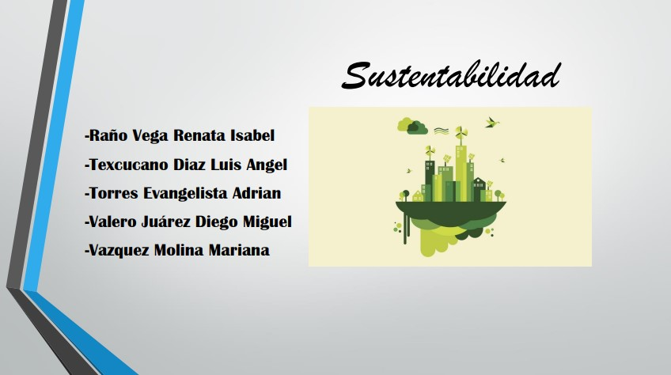
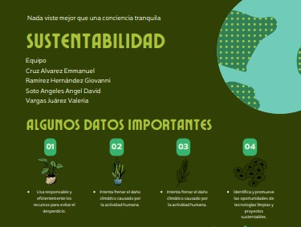
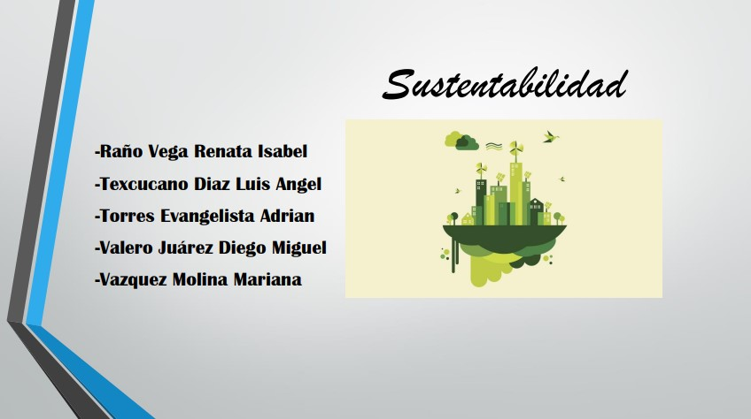
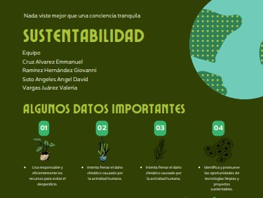
 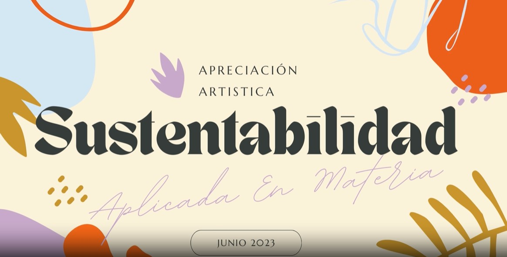
Conclusiones Generales Acerca del tema
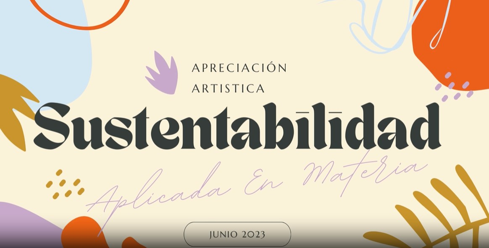
Conclusiones Generales Acerca del tema

Durante esta unidad abordamos sobre lo que es el concepto de sustentabilidad y sostenibilidad,
pero sabemos que sustentabilidad y sostenibilidad no tienen el mismo concepto. El concepto de desarrollo sostenible,
procede de la preocupación por el medio ambiente, si no que tratar de superar la visión del medio ambiente
como un aspecto a parte de la actividad humana que hay que preservar
El desarrollo sustentable, es que promueve satisfacción de las necesidades de la humanidad,
sin poner en peligro las posibilidades de las futuras generaciones en cuestión a sus necesidades.
El desarrollo sustentable tiene principios como el precautorio, interdependencia e interconexión,
eficiencia y mesura y por último el de equilibrio, estos principios son fundamentales para que la sustentabilidad se genere.
Cabe recordar que el desarrollo sostenible tiene tres aspectos importantes
que deben tomarse en cuenta para un futuro mejor, y estos son: ambiental, económico y social.
A sí mismo el desarrollo sustentable nos brinda como beneficio conservar
los recursos naturales y así cuidar el planeta; aumentando el crecimiento en el desarrollo de la humanidad,
porque si no cuidamos nuestro planeta, sucederán desastres naturales, así como lo que sucedió el 7 de septiembre de 2017,
un terremoto de 8.2 ° en la escala de Richter sacudió a todo México, más a Chiapas y Oaxaca,
por eso cuidemos nuestro planeta. No está de más recordar que la finalidad del desarrollo sustentable es lograr un desarrollo
más justo y equitativo y así permitir a la sociedad satisfacer sus necesidades, pero sin comprometer la capacidad
de las generaciones futuras de satisfacer las suyas
esta pagina fue realizada por el equipo 2 al cual le correspondió la materia de Computacion Basica
Equipo 2
Mijares Galindo Victor Miguel
Medina tamayo Carlos Bogarth
Mendoza gaona Carlos
Garcia reyes Carlos
Sanchez Ponce Jhonatan Alejandro